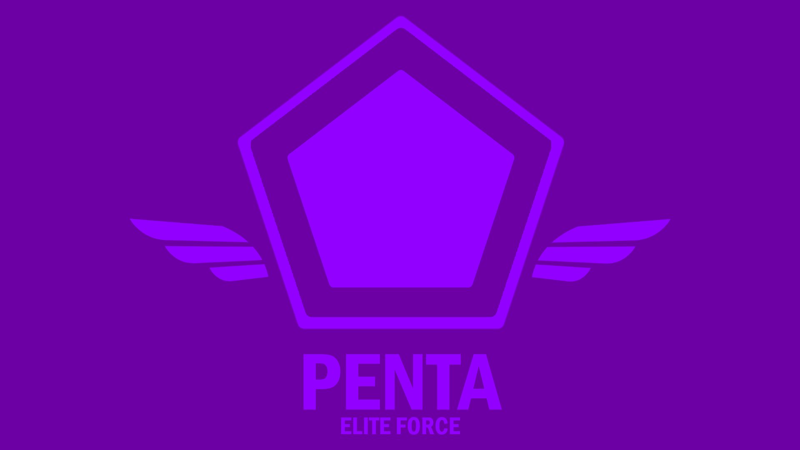
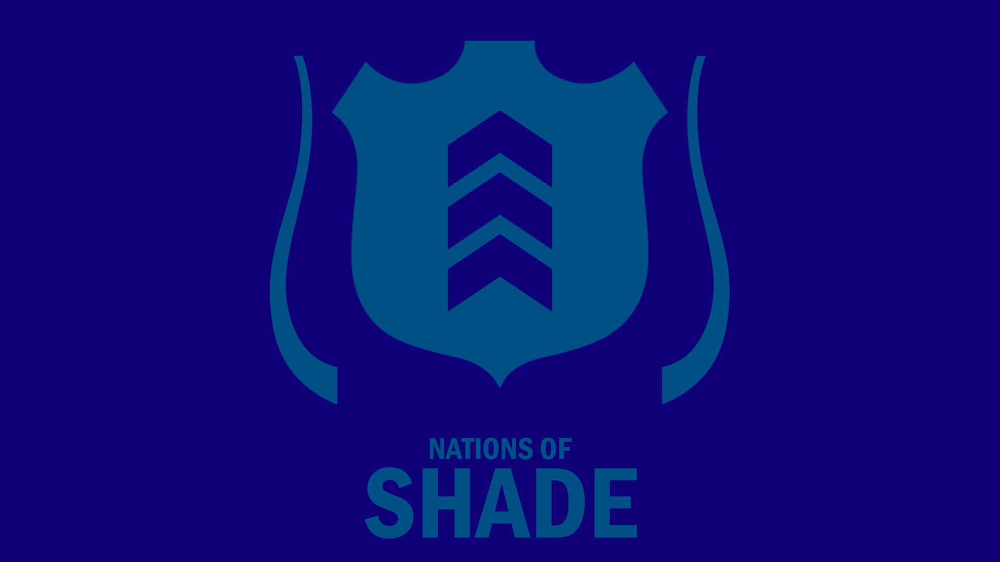
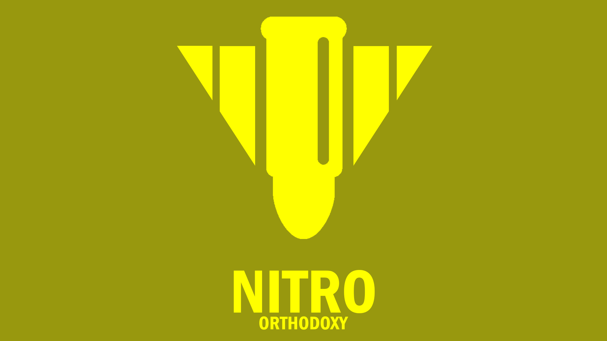

The Iris War
Factions
There are three main factions in the original Iris War concept, all of which were part of the original Iris Alliance that fell apart. They each represent a nation that was largely a part of said alliance.
The Penta Elite Force
The Penta Elite Force was the first to break off from the Iris Alliance, believing that their governing ways were dictator-like and not suited to individual needs. They began to extend the capabilities of their laser technology that has originally benefitted the Alliance, pushing the limits of light and plasma. They represent the technological capabilities of the US and Canada and predominantly are best when they reach the top of their tech tree.
The Nations of Shade
The Nations of Shade are the remnants of the Iris Alliance after the Penta and Nitro split off. They still keep some of the Iris Spirit but mostly deviated from them, and not they specialize in water and ice based weapons as well as better naval capabilities. They represent the governments and traditionalism of the European Union and mostly operate as an independent organization of the former Iris Alliance.
The Nitro Orthodoxy
The Nitro Orthodoxy is the rebel group that seized the discourse within the Iris Alliance to achieve their own ends. Upon splitting off, they began to shift towards an all-female military and implemented the Iris Alliance's older, more robust technology that was used during the Triage War (the war that came before this). They represent a more tyrannical government, similar to that of China and other third-world countries, and are very fond of surprise attacks to make their presence known.
Civilian Militias
Collectively, the number of civilian militia groups that will be present in the campaign will make up the fourth "faction" of the Iris War, though their significance isn't as much felt as the other three. They are mostly comprised of homebuilt technologies, which the three main factions sometimes salvage and use in their own arsenals, and they either help the faction that is in the area (willingly or unwillingly alike) or resist them, with varying degrees of success. Not many of them stood after the war was over, but some notable ones include the Direct Attack (Japan) and the Scorpion Cell (North Africa). The Triage also are waiting in hiding after their defeat in the Triage war in various countries, though they have become insignificant in the eyes of the three main factions.
A New Alliance?
As of now, work is being done on the Epilogue of the story (which is going to explain some of the events in the main story, to be finished later). In it, a new Iris Alliance is set to take place by three more significant militas (called Councils) that finally were able to find each other after six months of searching. More dtails on each of the Councils and the new alliance will come out soon.
The project is being updated frequently and can be found at the Github page. Be sure to check back often!